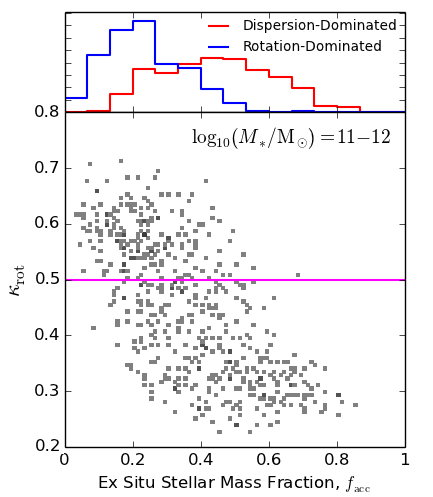

Research |
|
Galactic angular momentumIn Rodriguez-Gomez et al. (2022), we present a first exploration of the angular momentum content of galaxies in the IllustrisTNG cosmological simulation. In this paper, we not only show that the stellar specific angular momenta of IllustrisTNG galaxies are consistent with observational constraints, but also report some intriguing correlations between the angular momentum of a galaxy, the spin of its host dark matter halo, and the mass of the black hole at the galactic center. In particular, we show that galaxies that formed within faster spinning halos, as well as those hosting less massive black holes at their centers, tend to have a higher angular momentum content. The figure on the right shows the median galactic size (which is closely related to galactic angular momentum) as a function of galaxy stellar mass at z = 0, separating between galaxies that formed in halos with different spin parameter values (color scale). This figure shows that larger disks tend to form in faster spinning halos, in agreement with theoretical expectations, and that the range of spin parameters spans the observed range of galaxy sizes at fixed stellar mass. |
|
Galactic optical morphologyIn Rodriguez-Gomez et al. (2019), we carried out an "apples-to-apples" comparison between the optical morphologies of real galaxies observed with Pan-STARRS and those of simulated galaxies from the Illustris and IllustrisTNG cosmological simulations. To this end, we generated synthetic images of approximately 27,000 simulated galaxies, designed to be directly compared to Pan-STARRS observations, and ran the statmorph morphology code on both the real and simulated datasets. We found that the morphologies of IllustrisTNG galaxies are in good overall agreement with observations, although the IllustrisTNG model still has room for improvement regarding the morphology–color and morphology–size relations. The figure on the left shows the Gini–M20 diagram (Lotz et al. 2004) of real Pan-STARRS galaxies at z ~ 0.05. Further information about the statmorph code for measuring morphological parameters of galaxy images can be found here, while the synthetic image generation pipeline is described in more detail here. |
|
Galaxy mergers and kinematic morphologyRodriguez-Gomez et al. (2017) presents an exploration of the physical drivers of galaxy morphology at z = 0. We quantified the kinematic morphology of galaxies from the Illustris simulation using the kappa parameter (Sales et al. 2010), which measures the fraction of kinetic energy that is invested into ordered circular motion (an ideal disk would have kappa = 1), and compared it to various galaxy and halo properties. For massive galaxies (Mstar > 10^11 Msun), we found a strong anticorrelation between kinematic morphology and the ex situ (accreted) stellar mass fraction, a proxy for the importance of dry mergers in a galaxy's history, as shown in the figure on the right. This result confirms, within a full cosmological volume, that dry galaxy mergers favor the formation of elliptical galaxies. On the other hand, we found that halo spin plays a more important role in the morphology of dwarf galaxies (Mstar < 10^10 Msun). The morphology of Milky Way-mass galaxies, at the transition between these two regimes, is largely determined by a combination of galaxy mergers and halo spin. |
 |
Stellar mass assembly of galaxiesIn Rodriguez-Gomez et al. (2016), we present a detailed study on the origin of individual stellar particles in the Illustris cosmological simulation – namely, whether the stellar particles were formed in situ (within the galaxy where they are currently found) or ex situ (formed in another galaxy and subsequently accreted via mergers). For the latter component, we also determine the stellar mass ratio of the merger that brought each stellar particle in. This not only allows a precise quantification of the overall contribution from mergers to galaxy growth, but also provides information about the spatial distribution of in situ and ex situ stars within each galaxy. The figure on the left presents the median ex situ (i.e., accreted) stellar mass fraction of Illustris galaxies as a function of stellar mass at z = 0, comparing our measurements to other theoretical predictions from the literature. This figure shows that the ex situ stellar mass fraction is a strong function of stellar mass, ranging from roughly 10% for Milky Way-mass galaxies to over 80% for the most massive galaxies in the Universe. |
|
The galaxy–galaxy merger rateRodriguez-Gomez et al. (2015) presents a precise determination of the galaxy–galaxy merger rate in the Illustris cosmological simulation as a function of stellar mass, merger mass ratio, and redshift. We found that massive galaxies are somewhat more likely to undergo mergers than less massive objects, and that galaxy–galaxy merger rates were much higher in the past. A new algorithm for constructing merger trees (SubLink) was developed for this purpose, and is described in detail here. The figure on the right shows the major (mass ratio > 1/4) galaxy–galaxy merger rate of massive galaxies (descendant stellar mass > 10^11 Msun) as a function of redshift. This figure shows that the predictions from the Illustris simulation (solid colored lines) are consistent with most observational constraints at z < 3 (symbols), and that the galaxy–galaxy merger rate is a strongly increasing function of redshift. |